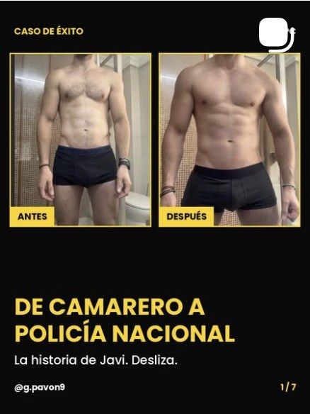
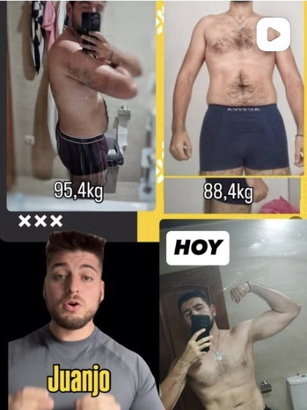
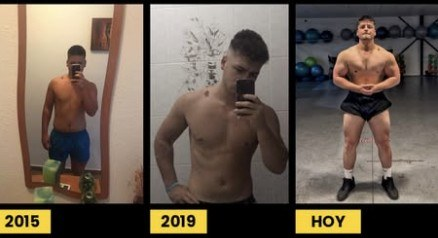
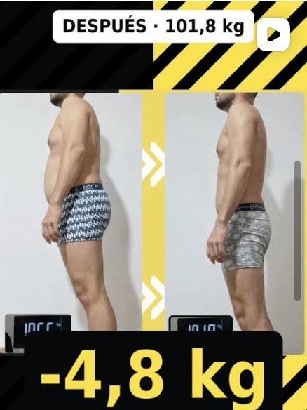
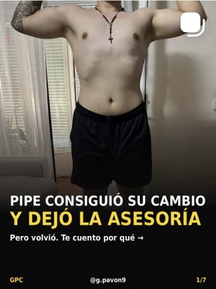

Encajar
El plan se monta sobre tu cuadrante real. Tú: me lo mandas, haces tus 3 sesiones mínimas y llegas a tus pasos.
Si trabajas de noche, a turnos rotativos o con un horario que cambia cada semana, te ayudo a perder grasa y ponerte en forma de verdad —fuerte y con fondo— con un plan que se adapta a tu cuadrante y no al revés. Me preparé para competir trabajando de albañil y en el campo, y perdía el progreso cada vez que el trabajo apretaba. Sé lo que es.
Me escribes la palabra CUADRANTE por privado, me cuentas tu turno y te digo por dónde empezaría en tu caso. Lo leo yo.


El problema no eres tú. Es un plan pensado para alguien que trabaja de 9 a 5.
"La fuerza no lo es todo."

Los 90 kg y el trabajo en la obra o en el campo. [Gerard: mándalas para cerrar esta parte.]
Empecé en el gimnasio con 16 años, 1,70 y 70 kg, después de dejar el fútbol por una lesión. Me encontré: levantaba pesos que la gente con experiencia no movía. Llegué a 90 kg, me metí en powerlifting y competí en un campeonato del gimnasio.
Luego quise competir en culturismo. Trabajaba de albañil y en el campo, y mi preparador me mandaba arroz blanco, pollo recalentado y tubos de pavo. Con ese trabajo y esa comida, acababa los fines de semana con atracones. Y cada vez que el trabajo apretaba, perdía todo el progreso.
Tardé años en entenderlo: no me faltaba disciplina, me faltaba un plan que encajara en mi vida. Cuando lo tuve, por fin me vi cómodo: fuerte, flexible y corriendo sin ahogarme.
En 2023 decidí dedicarme a esto y me formé con gente que vivía de ello. Mi primer cliente fue Javi, camarero, que quería ser Policía Nacional. Lo consiguió. Después llegaron vigilantes de seguridad con turnos de noche. Mis mejores casos trabajan a turnos. No es casualidad.
"¿De qué me sirve ser un tío musculado de 90 kg si no me puedo atar ni los cordones?"
Doce semanas con un orden claro. Lo primero que vas a dejar de hacer es perder el tiempo y jugar a la ruleta rusa con tu comida y tu entreno.
Ayudo a hombres de 20 a 40 que trabajan a turnos —de noche, rotativos o con horarios que cambian cada semana— a perder grasa y ponerse en forma de verdad, fuertes y con fondo, con un plan que se adapta a su cuadrante y no al revés.
Qué pasa: Montamos el plan sobre tu cuadrante real y dejas de empezar de cero cada vez que cambias de turno.
Qué haces tú: Me mandas tu cuadrante, haces tus 3 sesiones mínimas y llegas a tus pasos.
Qué pasa: Baja la grasa (o sube el músculo si ese es tu objetivo), suben las cargas y aguantas más corriendo o subiendo escaleras.
Qué haces tú: Subes cargas cada semana, metes el trabajo de fondo y ajustamos la comida en cada revisión.
Qué pasa: Aprendes a ajustar tú solo entreno y comida cuando cambia el turno, encadenas noches o llegan las vacaciones.
Qué haces tú: Te quedas con tus plantillas por tipo de turno y tu plan para los 3 meses siguientes.
Prueba: "Me preparé para competir trabajando de albañil y en el campo, y perdía el progreso cada vez que el trabajo apretaba. Hoy hago planes para gente con turnos imposibles."
Felipe, vigilante de seguridad: −17 kg (de 111,2 a 94,2). Javi: de camarero a Policía Nacional. Juanjo, vigilante: de 95,4 a 88,4 kg.
El plan se monta sobre tu cuadrante real. Tú: me lo mandas, haces tus 3 sesiones mínimas y llegas a tus pasos.
Baja la grasa, suben las cargas y el fondo. Tú: subes cargas cada semana y ajustamos la comida en cada revisión.
Aprendes a ajustarlo tú solo cuando cambia el turno. Tú: te quedas con tus plantillas por tipo de turno.
Me pasas tu cuadrante y tu revisión; te ajusto el plan. Alguien pendiente de ti, que es lo que más se echa de menos solo.
Cada sesión tiene versión de mañana, tarde y noche, y cada comida, versión para el tupper de madrugada. No te pido que vivas en el gimnasio: te pido 3 sesiones mínimas y tus pasos, caiga el turno que caiga.
Clientes reales, publicados en mi Instagram. Sin cuerpos de catálogo: gente que trabaja de noche y aun así cambió.
−17 kg
De 111,2 a 94,2 kg trabajando de vigilante de seguridad.
De camarero a Policía Nacional
No conseguía coger peso ni condición. Su objetivo era ser policía nacional, y lo logró. Fue mi primer cliente.
95,4 → 88,4 kg
Vigilante de seguridad, con horario distinto al de Felipe y el mismo problema.

−4,8 kg
[Nombre, trabajo y semanas: confirmar con Gerard.]

Dejó la asesoría. Y volvió.
Probó solo, con rutinas de amigos, y nada. Le faltaba lo mismo que a casi todos: alguien pendiente y una revisión cada semana.
La confianza era al 100 %: lo que les mandaba, lo hacían.Lo que tienen en común mis mejores casos
Por privado en Instagram. Me cuentas tu turno, qué comes y qué quieres conseguir.
Si encajamos, te llamo y te digo cómo montaría tu plan con tu horario real.
Tu fase 1 hecha sobre tu cuadrante y la primera revisión en el calendario.
Lo leo yo personalmente. Si encajamos, te escribo para hablar.
WhatsApp y formulario: pendientes de confirmar con Gerard.
Cuando te toque a ti: cada sesión tiene versión para antes del turno, después o en tu día libre. Lo que no cambia son las 3 sesiones mínimas a la semana.
Lo que te quepa en un tupper y te siente bien en el turno. Montamos comidas por tipo de turno, sin vivir de arroz blanco con pollo.
Comer poquísimo acaba en hambre, en atracón el fin de semana y en perder músculo. A mí me pasó. Se trata de comer bien a tu hora, no de pasar hambre.
Correr ayuda, pero solo correr no te pone fuerte, y solo pesas no te da fondo. Hacemos las dos cosas y que te muevas más en tu día.
Normal: un plan de 9 a 5 se rompe con el primer cambio de turno. Aquí me pasas tu cuadrante cada semana y lo ajusto. Tienes a alguien pendiente.
También es para ti. Javi era camarero y quería ser Policía Nacional: el objetivo era rendir, no solo verse bien.
Sí: plan, revisiones y seguimiento online. [Confirmar con Gerard si ofrece algo presencial.]
Depende de tu caso y del tiempo que trabajemos juntos. Escríbeme CUADRANTE y te lo explico cuando hablemos.
Por privado en @g.pavon9. Te contesto yo.